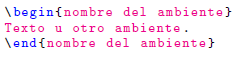
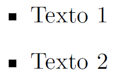

Sistema procesador de textos y un lenguaje de etiquetas que permite generar documentos de texto organizados y bien presentados. Recibe aportes de todo el mundo en forma de paquetes y es abierto a diversos sistemas operativos, por lo tanto tiene una amplia exibilidad.
Se necesita una distribución Tex para ser instalado.
Windows:MiKTeX
$$\LaTeX$$ usa un lenguaje de etiquetas para describir la estructura de un documento y su presentación.
Las etiquetas pueden tener 2 formatos:
Adicionalmente, se tienen 'ambientes' los cuales permiten generar comportamientos específicos sobre el texto.
Al compilar:
$$\Rightarrow x=y+1$$
| Comando | Resultado |
|---|---|
| \vee | $$\vee$$ |
| \wedge | $$\wedge$$ |
| \neg | $$\neg$$ |
| \langle | $$\langle$$ |
| \rangle | $$\rangle$$ |
| Comando | Resultado |
|---|---|
| \equiv | $$\equiv$$ |
| x^n | $$x^n$$ |
| x^{n+1} | $$x^{n+1}$$ |
| x_n | $$x_n$$ |
| x_{n+1} | $$x_{n+1}$$ |
| Comando | Resultado |
|---|---|
| \rightarrow | $$\rightarrow$$ |
| \leftarrow | $$\leftarrow$$ |
| \leftrightarrow | $$\leftrightarrow$$ |